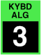

CONTROL voice count
This specifies the number of voices to be played for each note. If this is set to 1, the tune spread and pan spread parameters have no effect.
Toolkit
This is contained in the voice stack cluster within the Control section.
Chroma panel
This is contained in the CONTROL section of the right panel, under the following parameter number:
|  |
This appears in the display as Voice Count.
MIDI
This is accessed via NRPN 0,25.
Values
| MIDI | display | ||
| 1 | 1 | (default) | |
| 2 | 2 | ||
| 3 | 3 | ||
| 4 | 4 |